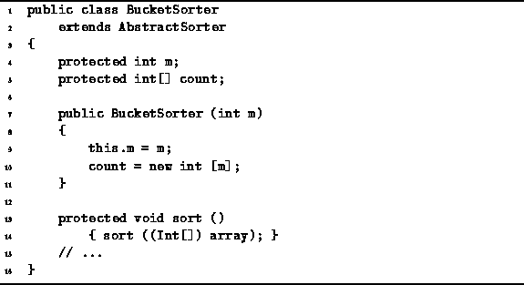
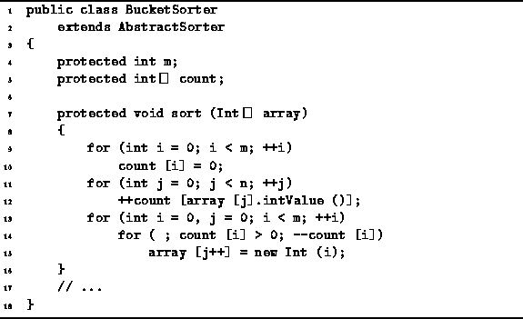
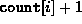
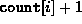

Data Structures and Algorithms
with Object-Oriented Design Patterns in Java
Data Structures and Algorithms
with Object-Oriented Design Patterns in Java
Program  introduces the BucketSorter class.
The BucketSorter class extends the AbstractSorter class
defined in Program .
This bucker sorter is designed to sort specifically an array of Ints.
The BucketSorter class contains two fields,
m and count.
The integer m simply keeps track of the size of the universe.
The count variable is an array of integers
used to count the number of occurrences of each element of the universal set.
introduces the BucketSorter class.
The BucketSorter class extends the AbstractSorter class
defined in Program .
This bucker sorter is designed to sort specifically an array of Ints.
The BucketSorter class contains two fields,
m and count.
The integer m simply keeps track of the size of the universe.
The count variable is an array of integers
used to count the number of occurrences of each element of the universal set.

Program: BucketSorter class constructor and sort methods.
The constructor for the BucketSorter class takes a single argument which specifies the size of the universal set. The variable m is set to the specified value, and the count array is initialized to have the required size.
Program defines the no-arg sort method.
It casts the array to an array Ints
and calls the sort(Int[]) method defined in Program .
The sort(Int[]) method defined in Program
sorts an array of Ints.
It begins by setting all of the counters to zero (lines 9-10).
This can clearly be done in O(m) time.

Program: BucketSorter class sort method.
Next, a single pass is made through the data to count the number of occurrences of each element of the universe (lines 11-12). Since each element of the array is examined exactly once, the running time is O(n).
In the final step, the sorted output sequence is created (lines 13-15).
Since the output sequence contains exactly n items,
the body of the inner loop (line 15) is executed exactly n times.
During the  iteration of the outer loop (line 13),
the loop termination test of the inner loop (line 14)
is evaluated  times.
As a result, the total running time of the final step is O(m+n).
iteration of the outer loop (line 13),
the loop termination test of the inner loop (line 14)
is evaluated  times.
As a result, the total running time of the final step is O(m+n).
Thus, the running time of the bucket sort method is O(m+n).
Note that if m=O(n),
the running time for bucket sort is O(n).
That is, the bucket sort algorithm is a linear-time sorting algorithm!
Bucket sort breaks the  bound associated
with sorting algorithms that use binary comparisons
because bucket sort does not do any binary comparisons.
The cost associated with breaking the
bound associated
with sorting algorithms that use binary comparisons
because bucket sort does not do any binary comparisons.
The cost associated with breaking the  running time bound
is the O(m) space required for the array of counters.
Consequently, bucket sort is practical only for small m.
For example, to sort 16-bit integers
using bucket sort requires the use of an array of counters.
running time bound
is the O(m) space required for the array of counters.
Consequently, bucket sort is practical only for small m.
For example, to sort 16-bit integers
using bucket sort requires the use of an array of counters.
 Copyright © 1998 by Bruno R. Preiss, P.Eng. All rights reserved.
Copyright © 1998 by Bruno R. Preiss, P.Eng. All rights reserved.